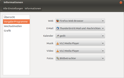
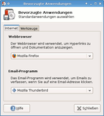
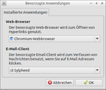
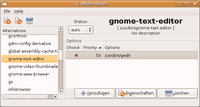

Alternativen-System
Zum Verständnis dieses Artikels sind folgende Seiten hilfreich:
Ein Vorteil von Linux ist die Vielfalt von Anwendungen. Man kann zwischen mindestens 42 Editoren oder 24 Mail-Programmen wählen. Der Benutzer hat dabei alle Freiheiten bei der Auswahl seiner Lieblingsprogramme. Diese Programme können alle gleichzeitig installiert sein. Für andere Programme kann es aber schwierig sein festzustellen, welches Programm für welche Aufgabe benutzen werden soll.
Das Alternativen-System ermöglicht es, aus mehreren Programmen mit gleicher Funktionalität eines als systemweite Vorgabe zu wählen. Verwendet wird es in der Regel bei Debian und darauf basierenden Distributionen – wie Ubuntu.
Funktionsweise¶
Alternativen werden über zweifache symbolische Links verwirklicht. Zum Beispiel ist /usr/bin/x-www-browser ein symbolischer Link auf /etc/alternatives/x-www-browser, was wiederum ein symbolischer Link auf den als Vorgabe eingestellten Webbrowser ist.
Experten-Info:
Diese scheinbar unsinnige "Umleitung" erklärt sich dadurch, dass der FHS empfiehlt, dass vom Systemadministrator durchgeführte Änderungen sich auf das Verzeichnis /etc beschränken sollten.
Optionen¶
Das Alternativen-System kann mit dem Kommandozeilenprogramm [1] update-alternatives konfiguriert werden. Die folgenden Optionen sind gebräuchlich, wobei immer Eingabe und Ausgabe angegeben ist. Mitunter sind bei der Ausgabe noch weitere Ein- und Angaben des Benutzers notwendig.
--get-selections- Zeigt die Namen der Gruppen an:update-alternatives --get-selections
Der Gruppenname ist Voraussetzung für alle folgenden Befehle.
--list GRUPPENNAME- Zeigt alle Ziele der Linkgruppe an:update-alternatives --list x-www-browser
/usr/bin/firefox /usr/bin/epiphany /usr/bin/dillo /usr/bin/opera
--display GRUPPENNAME- Zeigt Informationen über die Linkgruppe an, in derlinkder Master-Link ist. Die angezeigten Informationen enthalten den Modus der Gruppe (automatisch oder manuell), auf welche Alternative der Symlink derzeit zeigt, welche weiteren Alternativen alsslavezur Verfügung stehen und die installierte Alternative mit der höchsten Priorität.update-alternatives --display x-www-browser
x-www-browser - status is manual. link currently points to /usr/bin/epiphany /usr/bin/firefox - priority 70 slave x-www-browser.1.gz: /usr/share/man/man1/firefox.1.gz /usr/bin/epiphany - priority 85 slave x-www-browser.1.gz: /usr/share/man/man1/epiphany.1.gz /usr/bin/dillo - priority 100 slave x-www-browser.1.gz: /usr/share/man/man1/dillo.1.gz /usr/bin/opera - priority 80 Current `best' version is /usr/bin/dillo.
--config GRUPPENNAME- Zeigt die verfügbaren Alternativen an und erlaubt es, interaktiv ein Programm als Vorgabe auszuwählen.sudo update-alternatives --config x-www-browser
There are 4 alternatives which provide `x-www-browser'. Selection Alternative ----------------------------------------------- 1 /usr/bin/firefox * 2 /usr/bin/epiphany + 3 /usr/bin/dillo 4 /usr/bin/opera Press enter to keep the default[*], or type selection number: 2 Using `/usr/bin/epiphany' to provide `x-www-browser'.
--install ZIEL GRUPPENNAME PROGRAMM PRIORITÄT- Man kann dem Alternativen-System auch eigene Einträge für Anwendungen bekannt machen. Wenn man zum Beispiel den Webbrowser Firefox unter /usr/local/bin installiert hat, sähe der Befehl so aus:sudo update-alternatives --install /usr/bin/x-www-browser x-www-browser /usr/local/bin/firefox 100
Experten-Info:
Sehr ausführliche Informationen sind in den Manpages von update-alternatives nachzulesen. Um den generischen Namen des Ziels (der Master-Link; im obigen Beispiel /usr/bin/x-www-browser) von bereits installierten Alternativen-Gruppen herausbekommt, benötigt man die Ausgabe von:
sed -ne 2p /var/lib/dpkg/alternatives/x-www-browser
--set GRUPPENNAME PROGRAMM- Nachdem man ein Programm "installiert" (im Sinne von dem Alternativen-System bekannt gemacht) hat, setzt man nun das jeweils gewünschte Programm als Alternative. Dieser Befehl ist äquivalent zu--config, aber nicht interaktiv.sudo update-alternatives --set x-www-browser /usr/bin/epiphany
Using `/usr/bin/epiphany' to provide `x-www-browser'
Grafische Werkzeuge¶
Neben der Möglichkeit, Programme mit dem Alternativen-System systemweit als bevorzugte Anwendung zu setzen, gibt es in den verschiedenen Desktop-Umgebungen die Möglichkeit, Standardanwendungen nur für den jeweiligen Benutzer einzurichten. Die Änderungen erfolgen ohne Root-Rechte und überschreiben die systemweiten Vorgaben, gelten aber nur für den jeweiligen Benutzer.

Unity/GNOME 3¶
In Unity und bei der GNOME Shell können unter
"Systemeinstellungen → Informationen → Vorgabeanwendungen"
einige Standardanwendungen eingestellt werden. Die Einstellung für das Terminal legt man stattdessen mit Hilfe desselben fest:
gsettings list-recursively org.gnome.desktop.default-applications # Einstellungen anzeigen gsettings set org.gnome.desktop.default-applications.terminal exec 'gnome-terminal --maximize' # Einstellung ändern (Beispiel)
KDE¶
Über das  Anwendungsmenü unter
Anwendungsmenü unter
"Systemeinstellungen → Standard-Komponenten"
kann man unter KDE einstellen, welche Anwendungen benutzt werden sollen.
Damit ist es auch möglich, mittels sudo update-alternatives --config x-www-browser den systemweiten Browser auf Firefox und nur den KDE-Webbrowser z.B. von Konqueror auf rekonq einzustellen. Dann öffnet z.B. der TV-Browser (ein Java-Programm) Links weiterhin in Firefox.
MATE¶
Über das  MATE-Menü unter
MATE-Menü unter
"System → Einstellungen → Bevorzugte Anwendungen"
kann jeder Benutzer individuell einstellen, welcher Webbrowser, welches E-Mail- und welches Terminalprogramm zu nutzen ist.

Xfce¶
In der Desktopumgebung Xfce findet man diesen Dialog im  Anwendungsmenü unter
Anwendungsmenü unter
"Einstellungen → Bevorzugte Anwendungen"
Unter dem Reiter "Werkzeuge" können noch weitere Einstellungen vorgenommen werden. Neben Webbrowser und E-Mail-Programm können auch Standard-Terminal und -Editor festgelegt werden.

LXDE¶
Die Einstellungsmöglichkeiten bei LXDE sind im Vergleich mit den bisherigen Werkzeugen am bescheidensten. Zugänglich sind diese wie bei Xfce über das  Anwendungsmenü und
Anwendungsmenü und
"Einstellungen → Bevorzugte Anwendungen"
erreichbar.
Sonstige¶

G Alternatives¶
Neben der Verwaltung der Alternativen über die Kommandozeile oder den integrierten Möglichkeiten der Desktop-Umgebungen gibt ein weiteres grafisches Werkzeug namens "G Alternatives". Obwohl die Anwendung ursprünglich für GNOME 2 entwickelt wurde, eignet sie sich für alle auf der Grafikbibliothek GTK basierenden Oberflächen (praktisch alle offiziellen Ubuntu-Varianten mit Ausnahme von Kubuntu).
Dieses Programm kann direkt aus den offiziellen Paketquellen installiert [3] werden. Der Paketname lautet:
galternatives (universe)
 mit apturl
mit apturl
Paketliste zum Kopieren:
sudo apt-get install galternatives
sudo aptitude install galternatives
Der Programmstart [4] erfolgt bei Ubuntu-Varianten mit einem Anwendungsmenü über "System -> Alternatives Configurator". Alternativ kann man den Befehl:
gksudo galternatives
nutzen. In beiden Fällen sind Root-Rechte [2] erforderlich, da die systemweiten Vorgaben geändert werden. Die Bedienung sollte selbsterklärend sein - ansonsten sei noch einmal auf die Grundlagen am Anfang dieses Artikels verwiesen.
- Erstellt mit Inyoka
-
 2004 – 2017 ubuntuusers.de • Einige Rechte vorbehalten
2004 – 2017 ubuntuusers.de • Einige Rechte vorbehalten
Lizenz • Kontakt • Datenschutz • Impressum • Serverstatus -
Serverhousing gespendet von